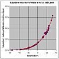

dew-point

Definition: The dew point is the temperature to which air must be cooled to become saturated with water vapor, assuming constant air pressure and water content. When cooled below the dew point, moisture capacity is reduced and airborne water vapor will condense to form liquid water known as dew. When this occurs via contact with a colder surface, dew will form on that surface.The dew point is affected by humidity. When there is more moisture in the air, the dew point is higher.When the temperature is below the freezing point of water, the dew point is called the frost point, as frost is formed via deposition rather than condensation.
Source: Wikipedia
Wikipedia Page (Something wrong with this association? Let us know.)
Wikidata Page (Something wrong with this association? Let us know.)
Occurs in: